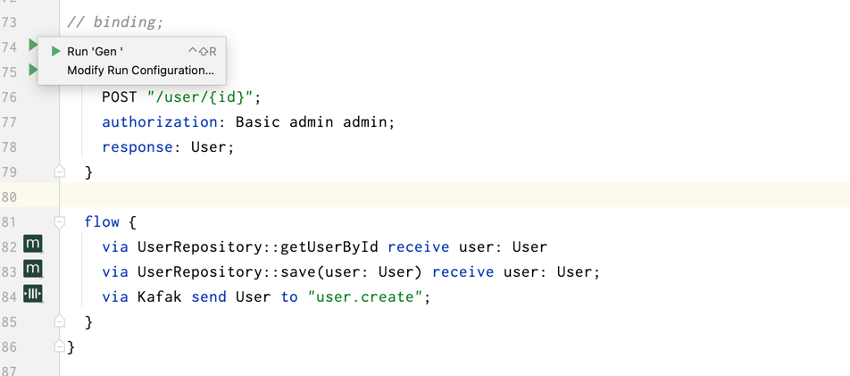

Chapter 2 - Binding Implementation
本节需要结合 IDEA 插件使用：

编写后 Binding 之后，在左侧点击 Run 'Gen' 即可生成代码。
Implementation DomainEvent
创建 API 时，需要绑定领域事件到实现。
impl UserCreated {
endpoint {
POST "/user/{id}";
authorization: Basic admin admin;
response: User;
}
flow {
via UserRepository::getUserById receive user: User
via UserRepository::save(user: User) receive user: User;
via Kafak send User to "user.create";
}
}
Layered Implementation
在配置了如下的分层之后，将直接添加到 Controller 中：
layered DDD {
dependency {
"interface" -> "application"
"interface" -> "domain"
"domain" -> "application"
"application" -> "infrastructure"
"interface" -> "infrastructure"
}
layer interface {
package: "com.feakin.demo.rest";
}
layer domain {
package: "com.feakin.demo.domain";
}
layer application {
package: "com.feakin.demo.application";
}
layer infrastructure {
package: "com.feakin.demo.infrastructure";
}
}